<title>Our Experience Ideas</title>
<meta name="claude:viewport-fit-sides" content="cover">
<link rel="preconnect" href="https://fonts.googleapis.com">
<link rel="preconnect" href="https://fonts.gstatic.com" crossorigin>
<link rel="stylesheet" href="https://fonts.googleapis.com/css2?family=Ysabeau+Office:wght@400;500;600&display=swap">
<style>
  /* Layout: one column like a scroll. First the part as it is today (the grey sequoia), then three
     ideas for the About page's "Our experience" part, each a card with the real page (laptop
     beside phone), its score and what still holds it back. The site's own paper and ink, one gold
     for the recommendation. */
  :root {
    --paper: #f4f0e6;
    --card: #faf7f0;
    --ink: #171512;
    --ink-soft: #5d574d;
    --rule: #d9d2c1;
    --gold: #7a5a14;
    --gold-bg: #f1e4c4;
    --ask: #1f3d2b;
    --ask-bg: #e3ebdf;
    --shot-bg: #f3efe4;
    --title: "Ysabeau Office", "Iowan Old Style", Georgia, serif;
    --body: system-ui, -apple-system, "Segoe UI", Roboto, sans-serif;
  }
  @media (prefers-color-scheme: dark) {
    :root:not([data-theme="light"]) {
      --paper: #1b1915;
      --card: #24211c;
      --ink: #f1ece0;
      --ink-soft: #b6ae9e;
      --rule: #3a362e;
      --gold: #f0d39a;
      --gold-bg: #3d3220;
      --ask: #cfe3c6;
      --ask-bg: #2b3a2c;
      --shot-bg: #2a2620;
      color-scheme: dark;
    }
  }
  :root[data-theme="dark"] {
    --paper: #1b1915;
    --card: #24211c;
    --ink: #f1ece0;
    --ink-soft: #b6ae9e;
    --rule: #3a362e;
    --gold: #f0d39a;
    --gold-bg: #3d3220;
    --ask: #cfe3c6;
    --ask-bg: #2b3a2c;
    --shot-bg: #2a2620;
    color-scheme: dark;
  }
  body {
    background: var(--paper);
    color: var(--ink);
    font: 17px/1.5 var(--body);
  }
  .wrap {
    max-width: 980px;
    margin: 0 auto;
    padding-left: max(16px, env(safe-area-inset-left, 0px));
    padding-right: max(16px, env(safe-area-inset-right, 0px));
    padding-block: 32px 72px;
    display: grid;
    gap: 28px;
  }
  header {
    display: grid;
    gap: 10px;
  }
  h1 {
    font: 600 38px/1.08 var(--title);
    margin: 0;
    text-wrap: balance;
  }
  .lede {
    margin: 0;
    max-width: 38em;
    color: var(--ink-soft);
  }
  .note {
    margin: 0;
    max-width: 40em;
    padding: 12px 14px;
    border-radius: 10px;
    border: 1px dashed var(--rule);
    font-size: 15px;
    color: var(--ink-soft);
  }
  .card {
    background: var(--card);
    border: 1px solid var(--rule);
    border-radius: 14px;
    padding: 18px;
    display: grid;
    gap: 14px;
  }
  .card h2 {
    font: 600 26px/1.2 var(--title);
    margin: 0;
    display: flex;
    flex-wrap: wrap;
    align-items: baseline;
    gap: 6px 12px;
    text-wrap: balance;
  }
  .tag {
    font: 700 22px/1 var(--title);
    color: var(--ink);
  }
  .badge {
    font: 600 13px/1 var(--body);
    color: var(--gold);
    background: var(--gold-bg);
    padding: 5px 9px;
    border-radius: 99px;
  }
  .card ul.notes {
    margin: 0;
    padding-left: 1.2em;
    display: grid;
    gap: 4px;
    max-width: 44em;
  }
  .score {
    margin: 0;
    color: var(--ink-soft);
    font-size: 15px;
    max-width: 44em;
  }
  .score b {
    color: var(--ink);
  }
  .shots {
    display: grid;
    grid-template-columns: 3fr 1fr;
    gap: 12px;
    align-items: start;
  }
  figure {
    margin: 0;
    display: grid;
    gap: 6px;
    min-width: 0;
  }
  figure img {
    display: block;
    width: 100%;
    height: auto;
    max-width: 100%;
    border-radius: 8px;
    border: 1px solid var(--rule);
    background: var(--shot-bg);
  }
  figcaption {
    font-size: 14px;
    color: var(--ink-soft);
  }
  .stack {
    display: grid;
    gap: 12px;
    min-width: 0;
  }
  .section-title {
    font: 600 28px/1.15 var(--title);
    margin: 12px 0 0;
  }
  .ask {
    background: var(--ask-bg);
    border-radius: 14px;
    padding: 18px;
    display: grid;
    gap: 10px;
  }
  .ask h2 {
    font: 600 24px/1.2 var(--title);
    margin: 0;
    color: var(--ask);
  }
  .ask ol {
    margin: 0;
    padding-left: 1.4em;
    display: grid;
    gap: 8px;
    max-width: 44em;
  }
  details.earlier summary {
    cursor: pointer;
    font: 600 20px/1.3 var(--title);
  }
  details.earlier summary:focus-visible {
    outline: 2px solid var(--gold);
    outline-offset: 4px;
    border-radius: 6px;
  }
  details.earlier[open] summary {
    margin-bottom: 8px;
  }
  footer {
    font-size: 14px;
    color: var(--ink-soft);
    max-width: 44em;
  }
  @media (max-width: 640px) {
    h1 {
      font-size: 32px;
    }
    .shots {
      grid-template-columns: 1fr;
    }
    .shots > figure.phone {
      max-width: 300px;
    }
  }
</style>

<main class="wrap">
  <header>
    <h1>Our experience, in California colour</h1>
    <p class="lede">You picked 3, the softer colour. Here it is built into the page.</p>
    <p class="note">These are screenshots of the built site on this computer. It is not live yet. The heading, the three numbers and the layout did not change.</p>
  </header>

  <h2 class="section-title">Built</h2>
  <section class="card" aria-labelledby="built">
    <h2 id="built">The sequoia, a little coloured</h2>
    <ul class="notes">
      <li>Version 3: the repaint with softer colour. Cinnamon bark, sage leaves, pale firs in the mist.</li>
      <li>The gold leaf stays plain gold when the picture sits still. A soft light crosses it once as you scroll it up.</li>
    </ul>
    <p class="score"><b>My score: 8.5/10.</b> It now matches the oak and the valley above it. Holding it back: the gold leaf is small, so from a distance it reads as a little yellow spot.</p>
    <div class="shots">
      <div class="stack">
        <figure><figcaption>Laptop, arriving from the valley at dawn</figcaption></figure>
        <figure>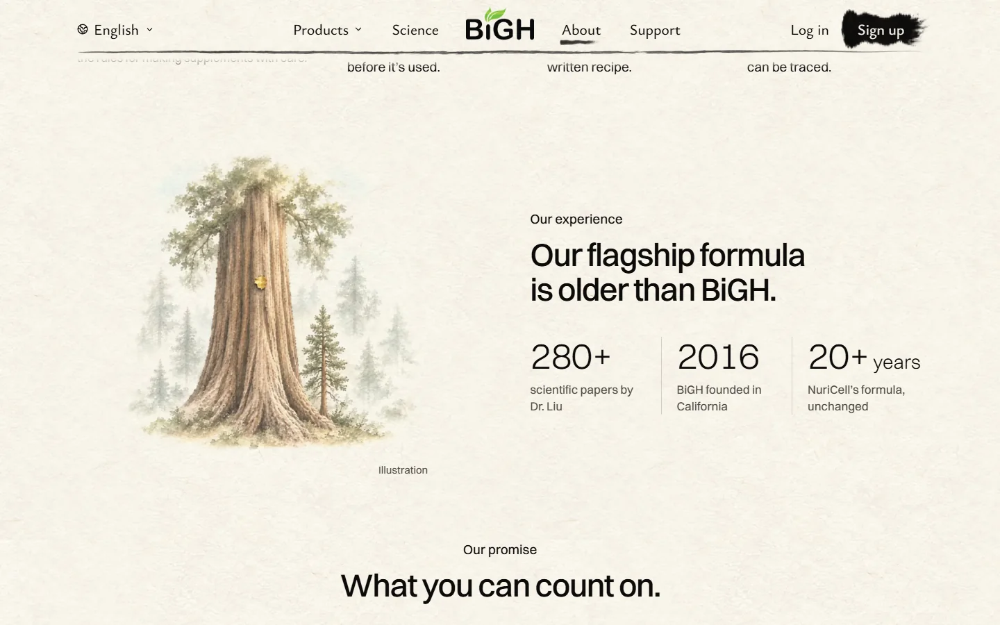<figcaption>Laptop, at rest</figcaption></figure>
        <figure>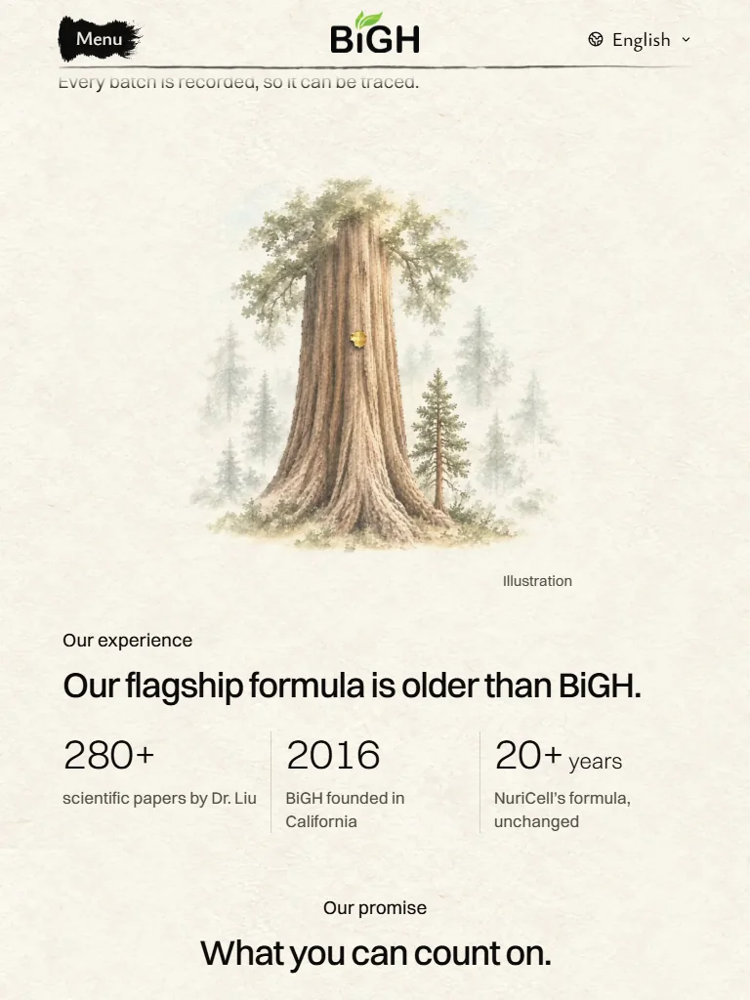<figcaption>Tablet</figcaption></figure>
      </div>
      <figure class="phone"><figcaption>Phone</figcaption></figure>
    </div>
  </section>

  <details class="card earlier">
    <summary>Earlier: the three colourings (you picked 3)</summary>
    <div class="stack">

  <h2 class="section-title">Side by side</h2>
  <section class="card" aria-labelledby="row">
    <h2 id="row">Today, then 1, 2, 3</h2>
    <figure>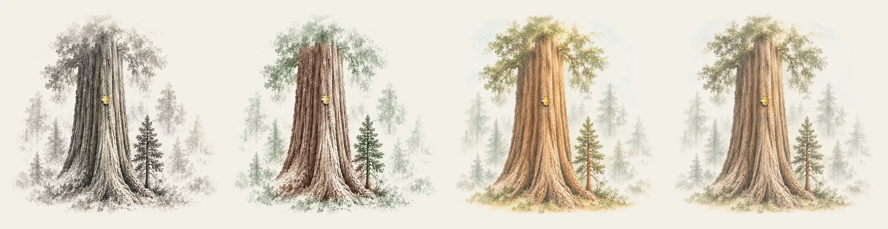<figcaption>Left to right: today (grey), 1, 2, 3</figcaption></figure>
  </section>

  <section class="card" aria-labelledby="s1">
    <h2 id="s1"><span class="tag">1</span> Same painting, tinted</h2>
    <ul class="notes">
      <li>Every brush stroke is today's. Only the colour is new.</li>
      <li>Brown bark, green leaves, pale blue-green trees behind.</li>
    </ul>
    <p class="score"><b>My score: 7.5/10.</b> Closest to today. Holding it back: the colour sits on top like a tint, and the bark reads a little dusty brown.</p>
    <div class="shots">
      <figure>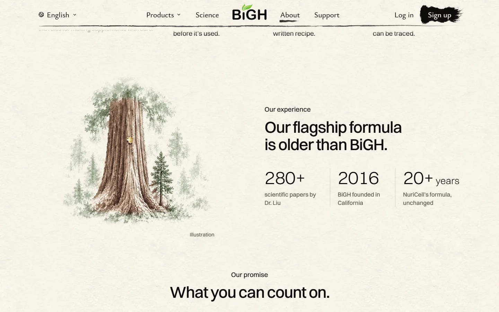<figcaption>Laptop</figcaption></figure>
      <figure class="phone">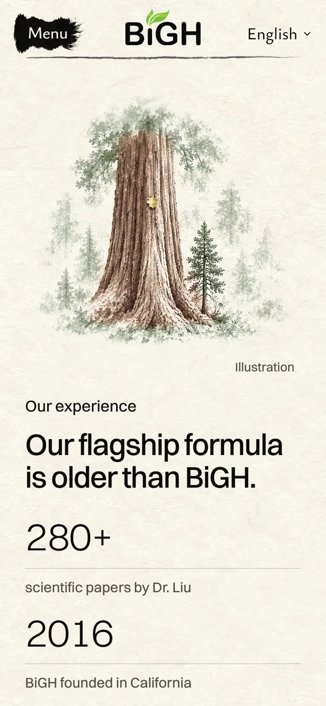<figcaption>Phone</figcaption></figure>
    </div>
  </section>

  <section class="card" aria-labelledby="s2">
    <h2 id="s2"><span class="tag">2</span> Repainted in colour</h2>
    <ul class="notes">
      <li>The same tree, layout and gold spot, painted again in thin watercolour.</li>
      <li>Warm cinnamon bark, like real sequoias. Sage leaves. A hint of blue sky in the mist.</li>
    </ul>
    <p class="score"><b>My score: 8.5/10.</b> Warm, and it matches the oak and the valley above it. Holding it back: more than "a little" colour. The brushwork is new, so the crown is a bit fuller and tidier than today's.</p>
    <div class="shots">
      <div class="stack">
        <figure>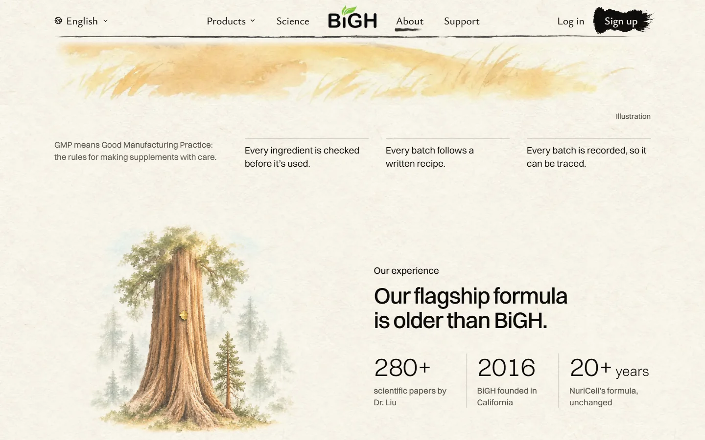<figcaption>Laptop, arriving from the valley at dawn</figcaption></figure>
        <figure>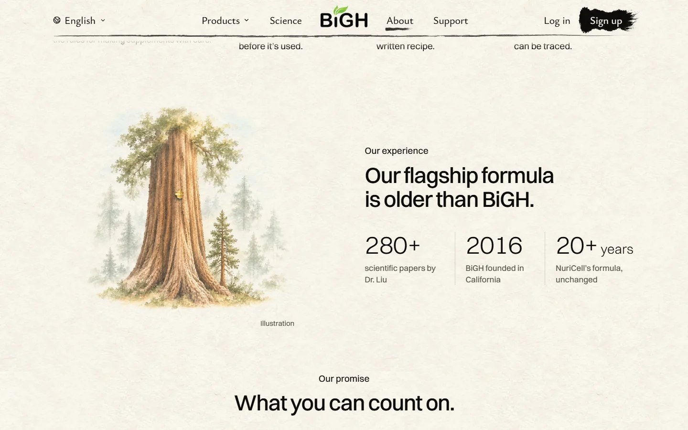<figcaption>Laptop, at rest</figcaption></figure>
      </div>
      <figure class="phone"><figcaption>Phone</figcaption></figure>
    </div>
  </section>

  <section class="card" aria-labelledby="s3">
    <h2 id="s3"><span class="tag">3</span> Repainted, softer <span class="badge">My pick</span></h2>
    <ul class="notes">
      <li>Version 2 with about a third less colour. The gold spot keeps its full gold.</li>
      <li>The closest to "a little bit coloured".</li>
    </ul>
    <p class="score"><b>My score: 8.5/10.</b> Calm, still warm, and it sits well under the valley. Holding it back: the gold spot is small against the brown bark, so it reads less than before. The same new brushwork as 2.</p>
    <div class="shots">
      <div class="stack">
        <figure><figcaption>Laptop, arriving from the valley at dawn</figcaption></figure>
        <figure><figcaption>Laptop, at rest</figcaption></figure>
      </div>
      <figure class="phone">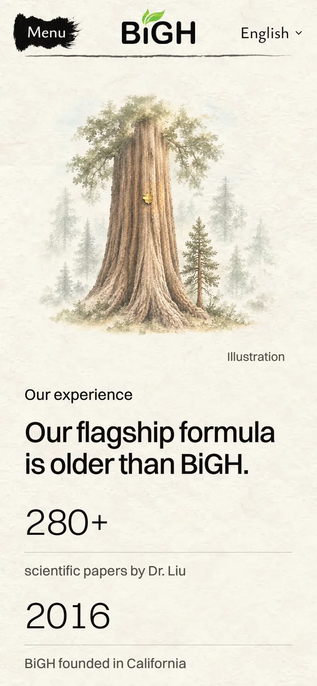<figcaption>Phone</figcaption></figure>
    </div>
  </section>

    </div>
  </details>

  <details class="card earlier">
    <summary>Earlier: the first three ideas (orange tree, sourdough, carousel)</summary>
    <div class="stack">

  <h2 class="section-title">Live today</h2>
  <section class="card" aria-labelledby="today">
    <h2 id="today">The grey sequoia</h2>
    <ul class="notes">
      <li>Grey ink, now the darkest picture on the page.</li>
      <li>Giant sequoias are also the homepage's opening, so it repeats the homepage.</li>
    </ul>
    <div class="shots">
      <figure>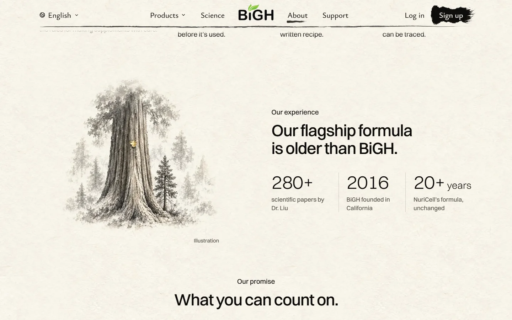<figcaption>Laptop, today</figcaption></figure>
      <figure class="phone">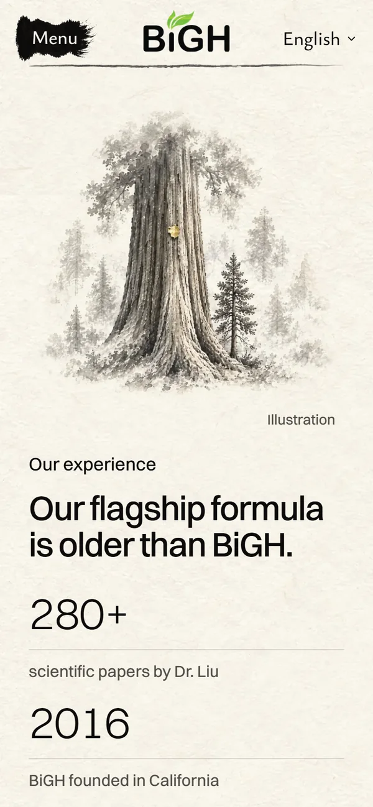<figcaption>Phone, today</figcaption></figure>
    </div>
  </section>

  <h2 class="section-title">The three ideas (mockups)</h2>

  <section class="card" aria-labelledby="a">
    <h2 id="a"><span class="tag">A</span> The parent tree <span class="badge">My pick</span></h2>
    <ul class="notes">
      <li>One old orange tree behind a little iron fence. Young groves run out behind it to the snowy mountains.</li>
      <li>The old one came first. The young ones grew after it. Like our formula, then BiGH.</li>
      <li>It's a real place: Riverside's parent navel orange tree, planted in 1873. It still bears fruit (a California State landmark).</li>
      <li>Gold leaf on some of the old tree's oranges.</li>
    </ul>
    <p class="score"><b>My score: 8/10.</b> Sunny, and it follows the valley at dawn above it well. Holding it back: at this size the gold oranges look pale yellow, a bit like lemons. It's the page's second big tree (the oak is the first).</p>
    <div class="shots">
      <div class="stack">
        <figure>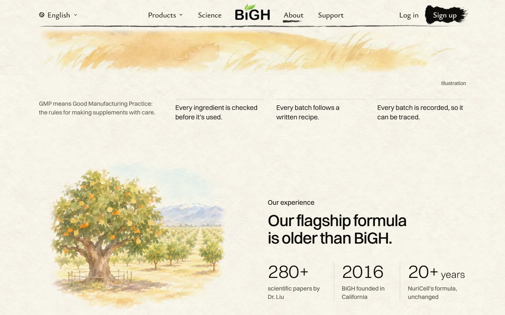<figcaption>Laptop, arriving from the valley at dawn</figcaption></figure>
        <figure>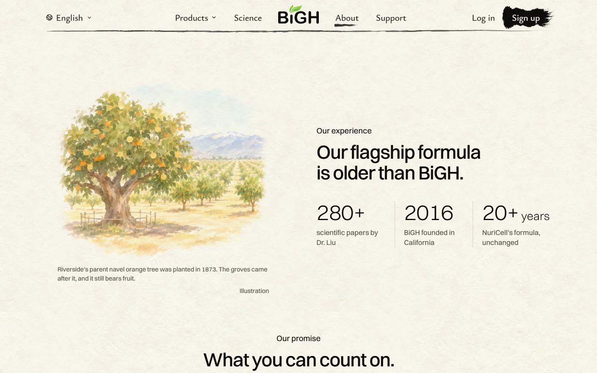<figcaption>Laptop, at rest</figcaption></figure>
      </div>
      <figure class="phone">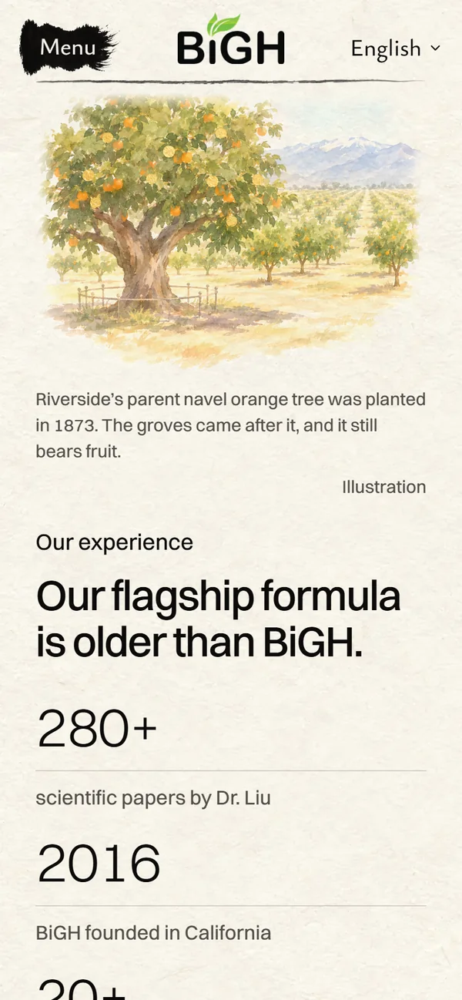<figcaption>Phone</figcaption></figure>
    </div>
  </section>

  <section class="card" aria-labelledby="b">
    <h2 id="b"><span class="tag">B</span> The mother dough</h2>
    <ul class="notes">
      <li>A San Francisco morning: a loaf of sourdough, the baker's crock of starter, Victorian houses and the bay in the window.</li>
      <li>The idea: a starter kept the same for over 150 years. Like a formula unchanged for 20+.</li>
      <li>Gold leaf on the loaf's crust where it burst open.</li>
    </ul>
    <p class="score"><b>My score: 7.5/10.</b> Warm and very San Francisco. Holding it back: without its line, it's just bread. Food on a supplement page can confuse. The painting is more detailed than the site's loose hand. The 1849 starter is the bakery's own claim.</p>
    <div class="shots">
      <figure>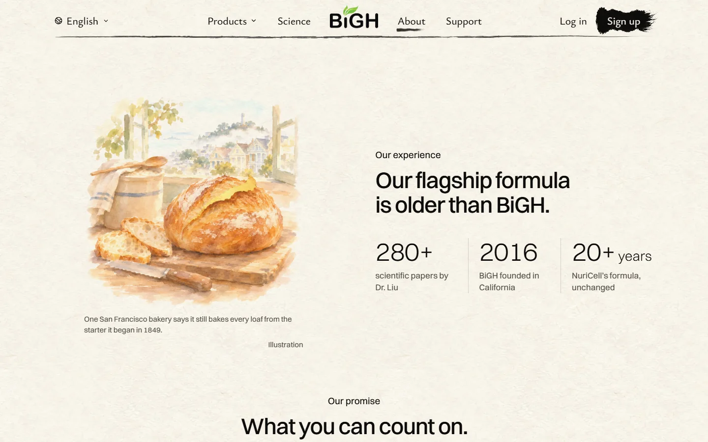<figcaption>Laptop</figcaption></figure>
      <figure class="phone">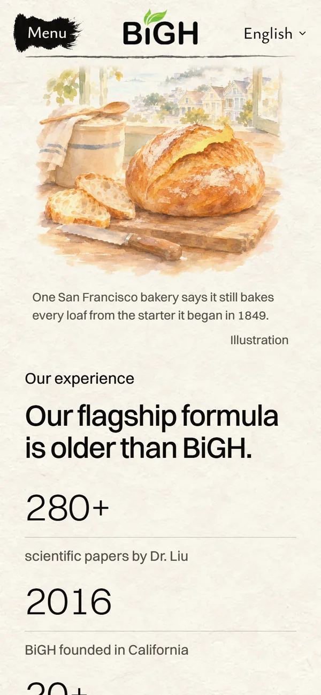<figcaption>Phone</figcaption></figure>
    </div>
  </section>

  <section class="card" aria-labelledby="c">
    <h2 id="c"><span class="tag">C</span> The old carousel</h2>
    <ul class="notes">
      <li>An old wooden carousel on a seaside pier. Children ride; a grandparent helps one up. Palms and the Pacific behind.</li>
      <li>The idea: old, and still loved today.</li>
      <li>Gold leaf on the canopy's trim. Real old carousels were gilded with gold leaf.</li>
    </ul>
    <p class="score"><b>My score: 7.5/10.</b> The happiest of the three, with people in it. Holding it back: the weakest link to "formula older than BiGH". It leans storybook, and an amusement ride may feel off for a health brand.</p>
    <div class="shots">
      <figure>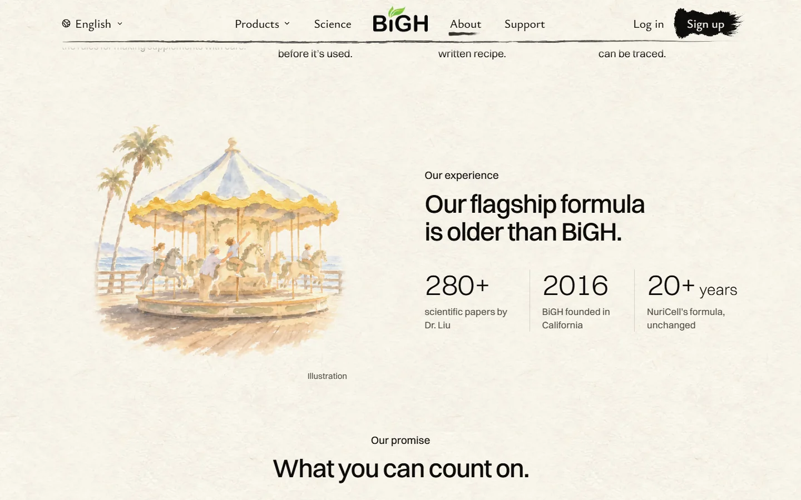<figcaption>Laptop</figcaption></figure>
      <figure class="phone">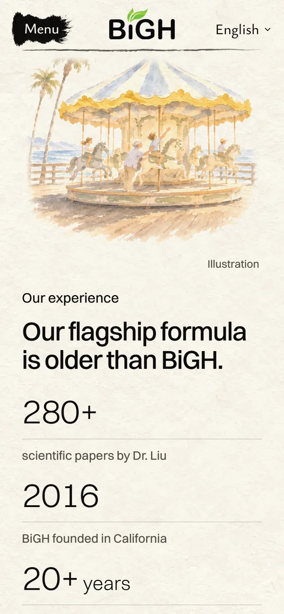<figcaption>Phone</figcaption></figure>
    </div>
  </section>

    <p class="score">You kept the sequoia over these.</p>
    </div>
  </details>

  <footer>Built: screenshots of the built site on this computer, not live. Earlier mockups: each painting laid into the live About page. Paintings by Codex, on the ChatGPT plan (no extra spend).</footer>
</main>
